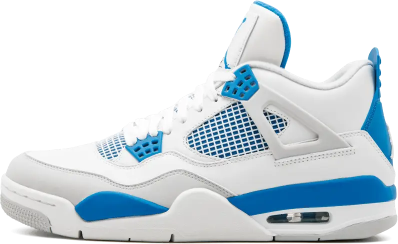

NIKE
AIR JORDAN 4
O Nike Air Jordan 4 Military Blue é um verdadeiro ícone que voltou com tudo. Ele traz um visual super limpo em couro branco premium, com o toque inconfundível do azul vibrante na entressola, nos ilhoses e no calcanhar. O design conta com a clássica sobreposição em cinza neutro na ponta do pé e a famosa redinha lateral para ventilação. Com a tecnologia Air visível garantindo conforto máximo, ele mantém a pegada original de 1989. É a escolha perfeita para quem quer um sneaker lendário, versátil e cheio de atitude para qualquer ocasião.
